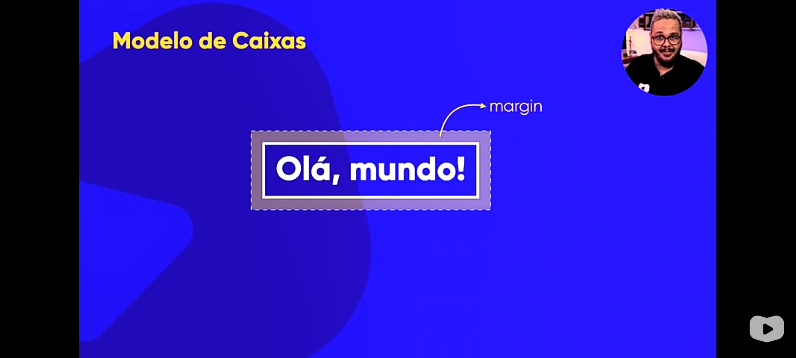
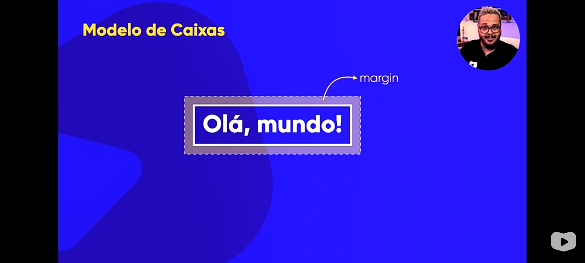

Box-level: quebra linha antes e após a caixa; a largura ocupa toda a largura da página (que é 100% do navegador como definido pelo viewport). Ex: tag div
Inline-level: não quebra linha antes nem após a caixa; a sua largura é somente a necessária para o seu conteúdo. Ex: tag span
Algumas características

 

Extras: user agent (ou agente de usuário) é o próprio navegador. Ele define estilos padrões em CSS para atributos que você não definiu no seu CSS.
As dicas só ficam visíveis em .html, mais especificamente na parte de style
As tags são configuradas para dizer se uma caixa é box-level ou inline-level. Você pode forçar essa configuração usando
display: block; para box-level
display: inline; para inline-level
Porém, os links são exemplos de inline-level